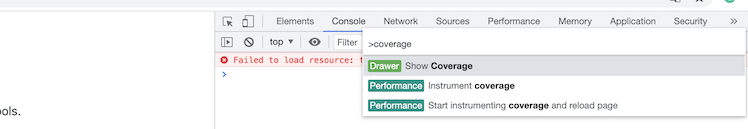
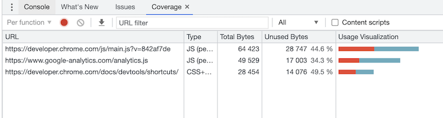

Chrome DevTools
DevTools 열기 단축키
- MAC:
Command + Option + I - Windows:
F12 또는 Control + Shift + I
사용되지 않는 리소스 확인하기
Chrome devTools 의 coverage를 사용하면 웹페이지에 다운로드 되지만 사용되지는 않는 리소스를 확인할 수 있다.
-
개발자 도구에서
Mac: Command + Shift + P,Windows: Control + Shift + P입력 후 "coverage" 를 입력해 실행시킨다.
-
추가된 'Coverage' 탭을 확인한다.
